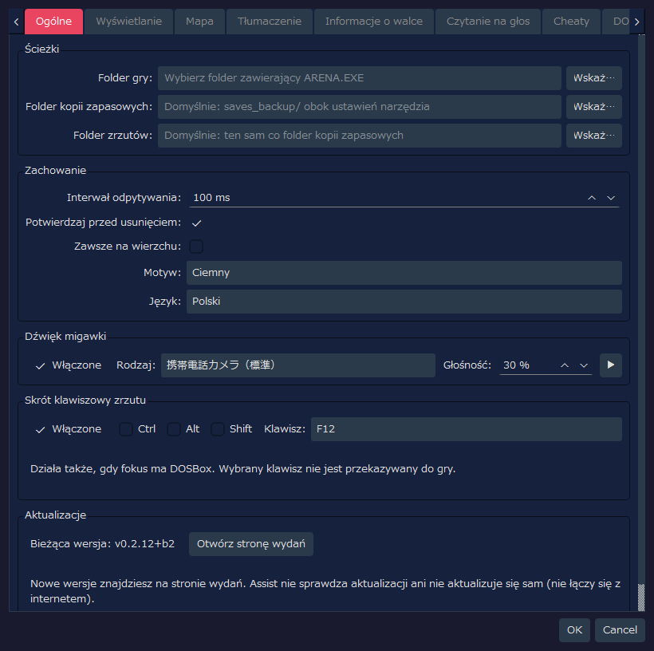
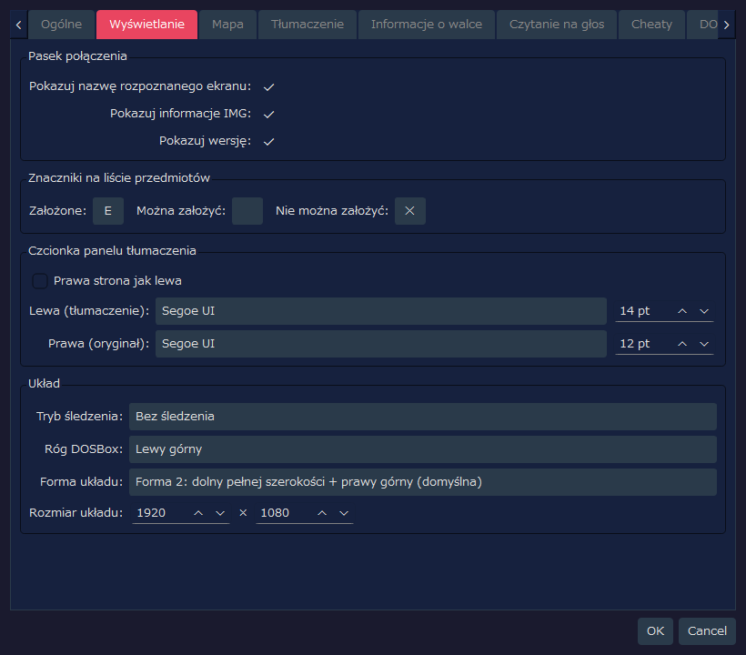
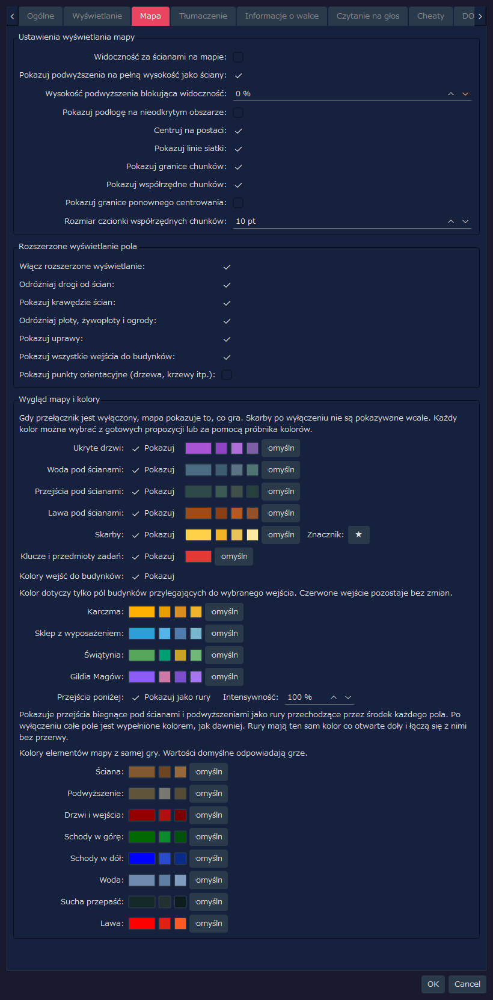
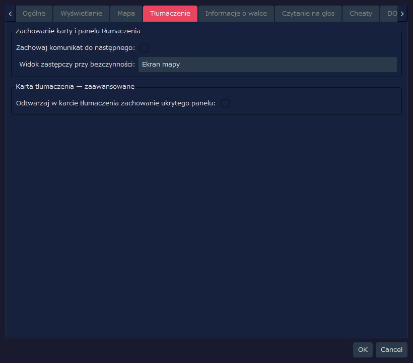
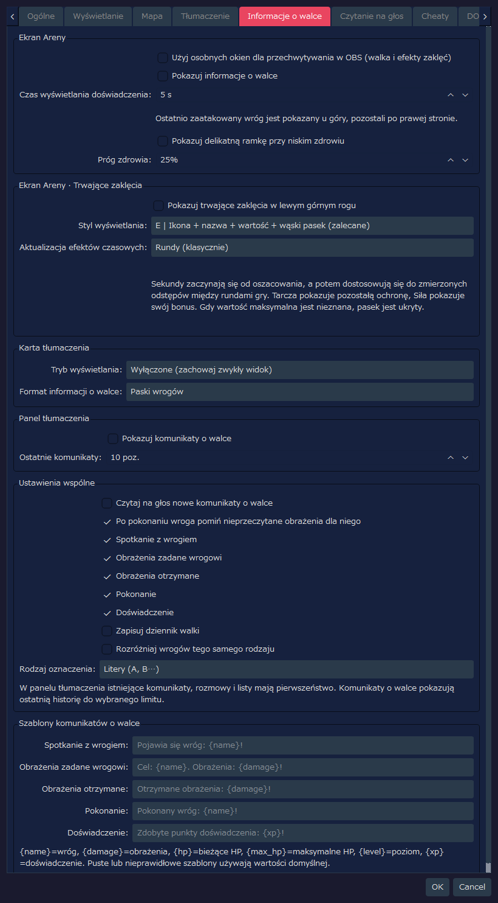
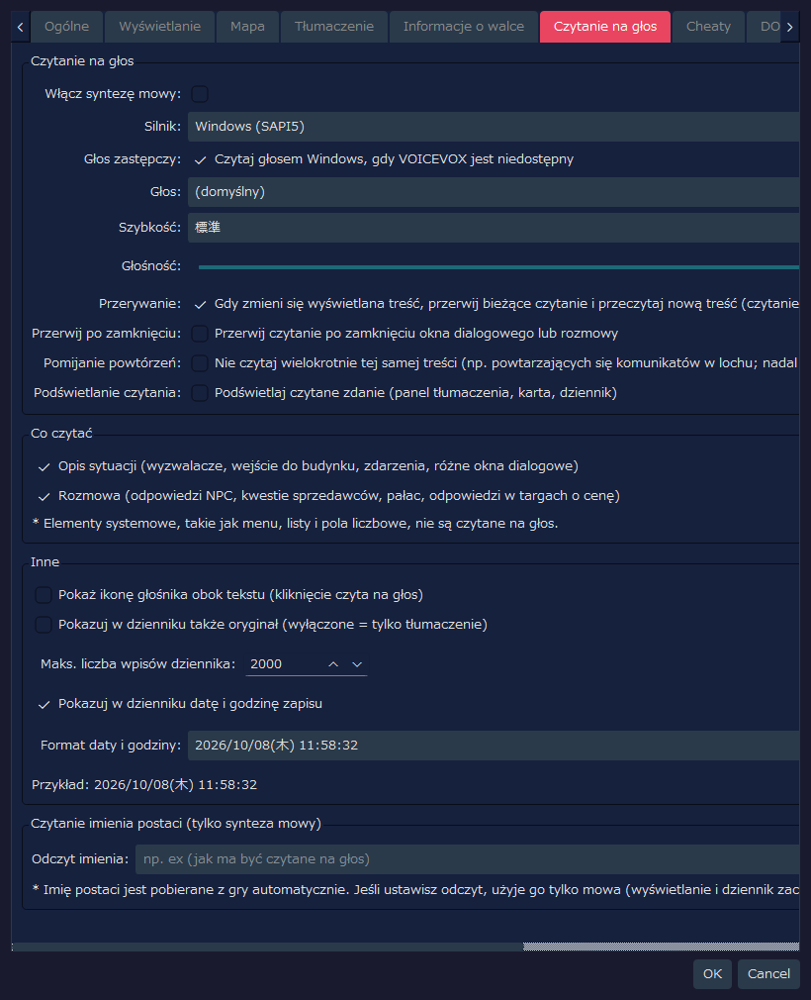
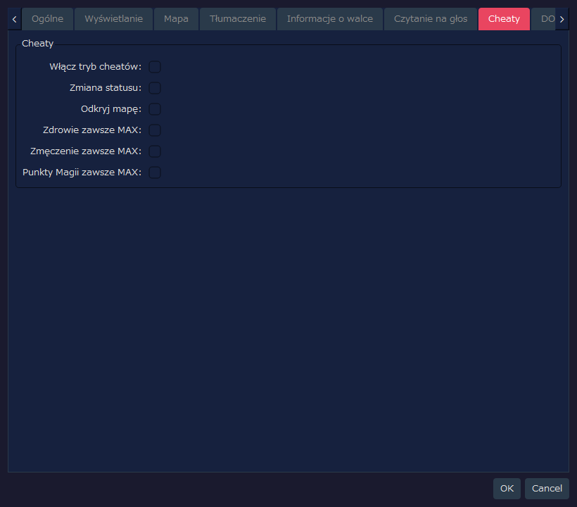
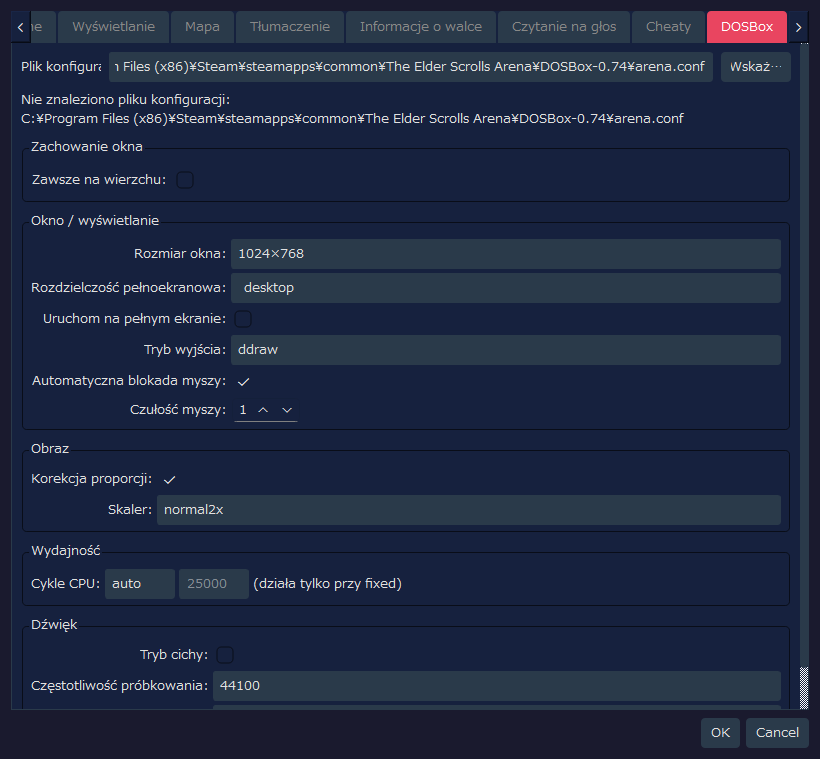

Ta strona przedstawia zrzut każdej karty okna Ustawienia programu RTESArenaAssist wraz z objaśnieniem poszczególnych elementów.
Zrzuty wykonano w oknie Ustawienia z ustawieniami domyślnymi, w języku wyświetlania i z domyślnym motywem „Ciemny”.
Wartości na karcie DOSBox odzwierciedlają nie tylko własny plik ustawień Assist, ale też to, co odczytano z pliku arena.conf w ścieżce domyślnej. Jeśli arena.conf w Twoim środowisku jest inny, wyświetlane wartości też będą inne.
Na tej karcie ustawiasz ścieżki, podstawowe zachowanie, dźwięk migawki i skrót klawiszowy zrzutu, a także sprawdzasz swoją wersję.

| Etykieta | Domyślnie | Opis |
|---|---|---|
Folder gry: | Pusto | Folder zawierający plik ARENA.EXE Areny i pliki zapisów. Dopóki nie jest ustawiony, zarządzanie zapisami i odczyt danych gry są niedostępne |
Folder kopii zapasowych: | Pusto | Miejsce przechowywania kopii zapasowych zapisów. Gdy pole jest puste, używany jest folder saves_backup/ obok pliku ustawień programu |
Folder zrzutów: | Pusto | Miejsce zapisywania zrzutów ekranu. Gdy pole jest puste, używany jest ten sam folder co folder kopii zapasowych |
Wskaż… | - | Wybiera odpowiedni folder |
| Etykieta | Domyślnie | Opis |
|---|---|---|
Interwał odpytywania: | 100 ms | Jak często sprawdzany jest ekran i stan pamięci DOSBox. Wartość domyślna jest krótka, aby łatwiej wychwytywać krótkie komunikaty |
Potwierdzaj przed usunięciem: | WŁ. | Pokazuje okno potwierdzenia przy usuwaniu zrzutów lub kopii zapasowych |
Zawsze na wierzchu: | WYŁ. | Pokazuje główne okno Assist przed innymi oknami |
Motyw: | Ciemny | Wybiera motyw kolorystyczny interfejsu |
Język: | Automatycznie (język systemu) | Język interfejsu. Gdy pole jest puste, język jest wykrywany automatycznie na podstawie języka systemu, a zmiana zaczyna działać po ponownym uruchomieniu aplikacji |
| Etykieta | Domyślnie | Opis |
|---|---|---|
Włączone | WŁ. | Odtwarza efekt dźwiękowy po zapisaniu zrzutu ekranu |
Rodzaj: | Aparat w telefonie (standardowy) | Odtwarzany dźwięk migawki. Możesz wybrać: standardowy, krótki, podwójny, z podbitymi wysokimi tonami i łagodny |
Głośność: | 30 % | Głośność odtwarzania dźwięku migawki |
▶ | - | Odsłuchuje wybrany dźwięk migawki |
Zrzut możesz zapisać samym naciśnięciem klawisza, gdy fokus ma ekran gry (DOSBox). Użyj go do przechwytywania komunikatów, które znikają po kilku sekundach.
| Element | Domyślnie | Opis |
|---|---|---|
Włączone | WŁ. | Używa skrótu klawiszowego do zrzutów |
Ctrl / Alt / Shift | WYŁ. | Włącz, aby łączyć z klawiszami modyfikującymi |
Klawisz: | F12 | Używany klawisz. Możesz wybrać od F5 do F12, PrintScreen, Pause, ScrollLock, Insert, Home, End, PageUp i PageDown |
| Etykieta | Domyślnie | Opis |
|---|---|---|
Bieżąca wersja: | - | Używana przez Ciebie wersja Assist |
Otwórz stronę wydań | - | Otwiera w przeglądarce stronę wydań Assist (listę wydań). Sprawdź tam, czy istnieje nowsza wersja |
Assist nie łączy się z internetem, więc nie sprawdza aktualizacji ani nie aktualizuje się sam.
Na tej karcie ustawiasz pasek połączenia, znaczniki wyposażenia na listach przedmiotów, czcionkę panelu tłumaczenia i układ.

| Etykieta | Domyślnie | Opis |
|---|---|---|
Pokazuj nazwę rozpoznanego ekranu: | WŁ. | Pokazuje na pasku połączenia nazwę aktualnie rozpoznanego ekranu |
Pokazuj informacje IMG: | WŁ. | Pokazuje na pasku połączenia wykrywane informacje IMG |
Pokazuj wersję: | WŁ. | Pokazuje wersję aplikacji na pasku połączenia i na pasku stanu |
| Etykieta | Domyślnie | Opis |
|---|---|---|
Założone: | E | Jednoznakowy znacznik pokazywany po lewej stronie założonych przedmiotów |
Można założyć: | Pusto | Znacznik przedmiotów, które można założyć. Domyślnie pole jest puste, więc nic się nie pokazuje |
Nie można założyć: | ✕ | Jednoznakowy znacznik pokazywany po lewej stronie przedmiotów, których nie można założyć |
| Etykieta | Domyślnie | Opis |
|---|---|---|
Prawa strona jak lewa | WYŁ. | Po włączeniu czcionka i rozmiar po stronie tekstu oryginalnego są takie same jak po stronie tłumaczenia |
Lewa (tłumaczenie): | Domyślna aplikacji / 14 pt | Czcionka i rozmiar używane dla tekstu przetłumaczonego. Jeśli nie zapisano nazwy czcionki, wybierana jest domyślna czcionka aplikacji dla Twojego środowiska |
Prawa (oryginał): | Domyślna aplikacji / 12 pt | Czcionka i rozmiar używane dla oryginalnego tekstu angielskiego. Ponieważ odbicie jest wyłączone, można je ustawić osobno niż po stronie tłumaczenia |
| Etykieta | Domyślnie | Opis |
|---|---|---|
Tryb śledzenia: | Bez śledzenia | Określa, czy po przesunięciu DOSBox lub Assist drugie okno podąża za nim |
Róg DOSBox: | Lewy górny | Narożnik ekranu odniesienia, w którym DOSBox jest umieszczany przez jednorazowe ułożenie i przez tryb układu |
Forma układu: | Forma 2: dolny pełnej szerokości + prawy górny (domyślna) | Sposób podziału obszaru między DOSBox i panele Assist. Forma 2 to standardowy układ, który wykorzystuje prawy górny róg i dolny pas na całą szerokość |
Rozmiar układu: | 1920 x 1080 | Rozmiar całego płótna w trybie układu |
Na tej karcie ustawiasz mapę eksploracji i rozszerzone wyświetlanie pola.

| Etykieta | Domyślnie | Opis |
|---|---|---|
Widoczność za ścianami na mapie: | WYŁ. | Po wyłączeniu nieodkryte obszary za ścianami nie są zapisywane na mapie. Po włączeniu jest bliżej oryginalnej Areny i zapisywane są także obszary widziane przez ściany |
Pokazuj podwyższenia na pełną wysokość jako ściany: | WŁ. | Pokazuje podwyższenia wypełniające przestrzeń od podłogi do sufitu kolorem ściany. Zmienia się tylko klasyfikacja wyświetlania; blokowanie widoczności pozostaje bez zmian. Podwyższenia niższe niż pełna wysokość nadal są pokazywane jako podwyższenia |
Wysokość podwyższenia blokująca widoczność: | 0 % | Przy wysokości sufitu równej 100% podwyższenia, których górna krawędź sięga tej wysokości lub wyżej, blokują widoczność na mapie. Przy 0% każde podwyższenie blokuje widoczność |
Pokazuj podłogę na nieodkrytym obszarze: | WYŁ. | Po wyłączeniu kolor podłogi mają tylko odkryte pola, co ukrywa kształt nieodkrytego obszaru. Po włączeniu cała mapa jest pokazana w kolorze pergaminu |
Centruj na postaci: | WŁ. | Sprawia, że mapa automatycznie podąża za postacią podczas ruchu. Gdy postać stoi, możesz przesuwać mapę ręcznie |
Pokazuj linie siatki: | WŁ. | Pokazuje linie siatki na granicach pól |
Pokazuj granice chunków: | WŁ. | Wyróżnia granice chunków (jednostki po 64 kafelki) na mapie pola |
Pokazuj współrzędne chunków: | WŁ. | Pokazuje współrzędne każdego chunku na mapie pola, aby łatwiej orientować się w położeniu |
Pokazuj granice ponownego centrowania: | WYŁ. | Pokazuje granice ponownego centrowania mapy pola jako linie przerywane. Dodatkowy widok do badania lub sprawdzania położenia |
Rozmiar czcionki współrzędnych chunków: | 10 pt | Rozmiar tekstu etykiet współrzędnych chunków |
| Etykieta | Domyślnie | Opis |
|---|---|---|
Włącz rozszerzone wyświetlanie: | WŁ. | Główny przełącznik rozszerzonego wyświetlania mapy pola. Po wyłączeniu widok jest zbliżony do automapy w grze |
Odróżniaj drogi od ścian: | WŁ. | Rysuje drogi, po których można chodzić, i nieprzechodnie elementy, takie jak budynki i ściany, w różnych kolorach |
Pokazuj krawędzie ścian: | WŁ. | Pokazuje obrysy ścian i terenu krawędziowego |
Odróżniaj płoty, żywopłoty i ogrody: | WŁ. | Rozróżnia teren krawędziowy, taki jak płoty, żywopłoty i ogrody, za pomocą łączących linii |
Pokazuj uprawy: | WŁ. | Pokazuje uprawy, takie jak kukurydza i pola, własnym kolorem lub znakiem |
Pokazuj wszystkie wejścia do budynków: | WŁ. | Pokazuje na czerwono także wejścia do domów, karczm, świątyń, bram miejskich i tak dalej. Wejścia do krypt, wież i lochów są czerwone niezależnie od tego ustawienia |
Pokazuj punkty orientacyjne (drzewa, krzewy itp.): | WYŁ. | Nakłada uproszczone znaczniki drzew, krzewów, skał, grobów, ruin i tak dalej. Jest ich dużo i utrudniają czytanie mapy, więc domyślnie jest wyłączone |
Mapa gry rysuje takie rzeczy jak przejścia pod ścianami bez ich rozróżniania. Tutaj ustawiasz, czy rysować je z rozróżnieniem, oraz kolor każdego elementu. Jeśli wyłączysz „Pokazuj” w wierszu, ten element wraca do takiego samego wyglądu jak na mapie gry (wyłączenie opcji Skarby nie pokazuje ich wcale).
| Etykieta | Domyślnie | Opis |
|---|---|---|
Ukryte drzwi: | WŁ. | Pokazuje odkryte ukryte drzwi własnym kolorem. Do czasu odkrycia pozostają ścianami |
Woda pod ścianami: | WŁ. | Pokazuje kanały wodne biegnące pod ścianami własnym kolorem. Nie są pokazywane, dopóki faktycznie nie przejdziesz tamtędy i ich nie odkryjesz |
Przejścia pod ścianami: | WŁ. | Pokazuje przejścia biegnące pod ścianami. Nie są pokazywane, dopóki faktycznie nie przejdziesz tamtędy i ich nie odkryjesz |
Lawa pod ścianami: | WŁ. | Pokazuje lawę płynącą pod ścianami własnym kolorem. Nie jest pokazywana, dopóki faktycznie nie przejdziesz tamtędy i jej nie odkryjesz |
Skarby: | WŁ. | Nakłada znacznik w miejscu, gdzie zdobyto skarb. Znak znacznika możesz zmienić w polu po prawej. Gdy opcja „Odkryj mapę” na karcie Cheaty jest włączona, pokazywane są wszystkie miejsca ze skarbami, niezależnie od tego, czy je zdobyto |
Klucze i przedmioty zadań: | WŁ. | Wśród skarbów pokazuje znaczniki kluczy i przedmiotów zadań innym kolorem. Po wyłączeniu są pokazywane tym samym kolorem co skarby. Nie są pokazywane, gdy opcja Skarby jest wyłączona |
Kolory wejść do budynków: | WŁ. | Na mapach miast zastępuje pola w kolorze budynku, przylegające do wejścia do karczmy, sklepu z wyposażeniem, świątyni lub Gildii Magów, kolorem dla każdego rodzaju budynku. Kolor czerwonego wejścia się nie zmienia. Kolor każdego rodzaju można zmienić w polach poniżej |
Przejścia poniżej: | Pokazuj jako rury / Intensywność 100 % | Pokazuje przejścia biegnące pod ścianami i podwyższeniami jako rury przechodzące przez środek pola. Po wyłączeniu całe pole jest wypełnione kolorem, jak dawniej. Kolor rur jest taki sam jak kolor dołów i łączy się z nimi bez przerwy. Zmniejszenie wartości Intensywność sprawia, że rury są mniej rzucające się w oczy |
Kliknij próbnik koloru po prawej stronie każdego elementu, aby wybrać dowolny kolor. Małe przyciski obok to proponowane kolory, które łatwo wybrać, a Domyślny to przycisk przywracający pierwotny kolor. W ten sam sposób możesz zmienić kolory elementów samej gry: ścian, podwyższeń, drzwi i wejść, schodów (w górę i w dół), wody, suchych przepaści i lawy (wartości domyślne są takie same jak w grze).
Na tej karcie ustawiasz dodatkowe wyświetlanie panelu tłumaczenia i karty Tłumaczenie.

| Etykieta | Domyślnie | Opis |
|---|---|---|
Zachowaj komunikat do następnego: | WYŁ. | Określa, czy komunikaty wyzwalaczy i interakcji z obiektami pozostają w panelu tłumaczenia do czasu nadejścia następnego komunikatu |
Widok zastępczy przy bezczynności: | Ekran mapy | Wybiera, co pokazywać na całej karcie Tłumaczenie podczas eksploracji, gdy nie ma przetłumaczonego tekstu. Domyślnie pierwszeństwo ma ekran mapy |
| Etykieta | Domyślnie | Opis |
|---|---|---|
Odtwarzaj w karcie tłumaczenia zachowanie ukrytego panelu: | WYŁ. | Po włączeniu wyniki tłumaczenia i komunikaty dialogowe są pokazywane na karcie Tłumaczenie, tak jak przy ukrytym panelu tłumaczenia. Ustawienie zaawansowane, służące do weryfikacji |
Możesz zastąpić część wbudowanego tłumaczenia własnym albo dodać nowy język.
Eksportuj szablon (aby utworzyć nowy język, wybierz (pusty szablon nowego języka)), kliknij Eksportuj... i zapisz plik JSON. Jeśli włączysz Dołącz angielski oryginał, zostanie dołączony angielski oryginał (oryginał tekstu gry tylko na komputerze, na którym ustawiono folder gry i utworzono słownik). Zapisz plik poza folderem tłumaczeń (patrz niżej).text wpisów, które chcesz zmienić. Wpisy z pustym text zachowują tłumaczenie wbudowane (w nowym języku — tłumaczenie języka z meta.fallback). Nie zmieniaj kluczy ani symboli zastępczych, takich jak %xx i {name} (wpisy z symbolami, których nie ma w tłumaczeniu bazowym, lub ze znakami < i > nie są wczytywane). source (angielski oryginał) i ref (tłumaczenie pomocnicze) nie są używane przy wczytywaniu.lang na początku (kod języka, na przykład tr) i meta.display_name (nazwa widoczna na liście języków). meta.fallback to wbudowany język używany dla nieprzetłumaczonych wpisów (domyślnie en); po ustawieniu meta.direction na rtl tekst jest wyświetlany od prawej do lewej.Importuj plik tłumaczenia kliknij Importuj... i wybierz zmieniony plik. Zostanie zaimportowany, jeśli przejdzie kontrole. Nowy język pojawi się wśród języków wyświetlania na karcie Ogólne. Zmiany zaczną obowiązywać po ponownym uruchomieniu aplikacji.Szablon wbudowanego języka zawiera bieżące tłumaczenie wszystkich wpisów. Usuń wpisy, których nie zmieniasz, albo zostaw ich text pusty. Zachowane wpisy są utrwalone w Twoim brzmieniu i nie otrzymują późniejszych poprawek wbudowanego tłumaczenia.
Przykład 1: zmiana tylko jednego wpisu wbudowanego tłumaczenia niemieckiego (zastępowane są tylko wpisy, które zapiszesz).
{
"schema": "rtesaa.user_translation",
"schema_version": 1,
"lang": "de",
"texts": {
"ui_app": {
"settings.title": "Meine Einstellungen"
}
}
} |
Przykład 2: nowy język (turecki). ref służy tylko pomocniczo i nie jest używany przy wczytywaniu.
{
"schema": "rtesaa.user_translation",
"schema_version": 1,
"lang": "tr",
"meta": { "display_name": "Türkçe", "fallback": "en", "direction": "ltr" },
"texts": {
"ui_app": {
"settings.title": { "ref": "Settings", "text": "Ayarlar" }
}
}
} |
Zaimportowane pliki pojawiają się na liście Wczytane. Zaznacz plik i kliknij Usuń, aby wrócić do tłumaczenia wbudowanego (nowy język zostanie usunięty). Otwórz folder otwiera folder translations obok pliku ustawień. Pliki JSON umieszczone w tym folderze są wczytywane automatycznie przy uruchomieniu. W dodanym języku dokumenty, takie jak podręcznik, są wyświetlane po angielsku.
Osobno ustawiasz, gdzie wyświetlane są informacje o walce i trwających zaklęciach. Nowe funkcje wyświetlania, czytania na głos i zapisu są domyślnie wyłączone. Wartości ustawień zapisane przez wcześniejsze wersje deweloperskie są przenoszone bez zmian. Wyświetlany tekst jest dostępny po japońsku, angielsku, hiszpańsku, niemiecku, francusku, włosku i rosyjsku.

| Element | Domyślnie | Opis |
|---|---|---|
Użyj osobnych okien dla przechwytywania w OBS (walka i efekty zaklęć) | WYŁ. | Zbiera informacje o walce i trwające zaklęcia w jednym oknie, które możesz wybrać w przechwytywaniu okna w OBS |
Pokazuj informacje o walce | WYŁ. | Pokazuje u góry ekranu ostatniego wroga, z którym doszło do wymiany ciosów, napotkanego i będącego aktualnie w zasięgu wzroku, oraz po prawej pozostałych napotkanych żywych wrogów, nawet poza zasięgiem wzroku. Możesz sprawdzić zdrowie, zmęczenie, punkty magii oraz zadane obrażenia i pokonania. Obrażenia, które otrzymujesz, są pokazywane przy dolnej krawędzi obszaru eksploracji |
Czas wyświetlania doświadczenia: | 5 s | Pokazuje doświadczenie w prawym dolnym rogu w chwili jego zdobycia i usuwa każdą ramkę po podanej liczbie sekund. Gdy zdobywasz więcej kolejno, starsze ramki są przesuwane w lewo (od 1 do 60 sekund) |
Pokazuj delikatną ramkę przy niskim zdrowiu | WYŁ. | Gdy zdrowie spadnie do podanego procentu lub niżej, sprawia, że krawędź ekranu eksploracji słabo błyska. Można ją włączyć, nawet jeśli nie używasz wyświetlania wrogów w informacjach o walce |
Próg zdrowia: | 25% | Procent, przy którym zaczyna się pokazywać ramka niskiego zdrowia (od 1 do 99% maksymalnego zdrowia) |
Wyświetlanie otrzymanych obrażeń znika samoczynnie po około 5 sekundach od ich otrzymania. Ta sama zasada obowiązuje dla zasięgu wzroku wrogów w każdym miejscu. Gdy mapa lub współrzędne nie są ustalone, wrogowie nie są pokazywani na podstawie domysłów.
Aby nagrywać w OBS, włącz to ustawienie, a następnie wybierz w opcji „Przechwytywanie okna” okno nakładki RTESArenaAssist (tytuł okna jest wyświetlany po japońsku w każdym języku), zezwól na przezroczystość i nałóż je nad obrazem gry. Informacje o walce i trwające zaklęcia pojawiają się w tym samym źródle.
| Element | Domyślnie | Opis |
|---|---|---|
Pokazuj trwające zaklęcia w lewym górnym rogu | WYŁ. | Pokazuje stan zaklęć: Światło, Tarcza, Wzmocnienie siły, Odporność na ogień i Lewitacja |
Styl wyświetlania: | E | Ikona + nazwa + wartość + wąski pasek (zalecane) | Wybierz spośród: A „Nazwa + pozostała wartość”, B „Nazwa + pasek poziomy”, C „Ikona + pasek poziomy”, D „Ikona + zaciemnianie zgodnie z ruchem wskazówek zegara”, E „Ikona + nazwa + wartość + wąski pasek” i F „Mała etykieta” |
Aktualizacja efektów czasowych: | Rundy (klasycznie) | Wybiera, czy Światło, Odporność na ogień i Lewitacja są aktualizowane w rundach, czy w szacunkowych sekundach, raz na sekundę. Sekundy są korygowane na podstawie odstępu postępu w grze, więc nie zawsze są stałą wielokrotnością, gdy tempo postępu się zmienia, na przykład przy DETAIL |
Tarcza pokazuje pozostałą ochronę, a Wzmocnienie siły pokazuje wielkość wzrostu. Gdy nie można potwierdzić wartości maksymalnej, na przykład po połączeniu w trakcie gry, pasek może zostać pominięty. Wyświetlanie sekund jest szacunkowe, a moment zakończenia efektu zależy od stanu w grze.
| Element | Domyślnie | Opis |
|---|---|---|
Tryb wyświetlania: | Wyłączone (zachowaj zwykły widok) | Wybierz: zachowanie zwykłego widoku, użycie zwykłego widoku razem z informacjami o walce albo pokazywanie informacji o walce na pełnym ekranie |
Format informacji o walce: | Paski wrogów | Gdy informacje o walce są pokazywane, wybiera tekst lub wyświetlanie pasków wrogów |
| Element | Domyślnie | Opis |
|---|---|---|
Pokazuj komunikaty o walce | WYŁ. | Pokazuje tekst walki w panelu tłumaczenia. Gdy pojawia się istniejący komunikat, rozmowa lub lista, one mają pierwszeństwo |
Ostatnie komunikaty: | 10 poz. | Pokazuje ostatnie od 1 do 50 wierszy walki. Po przekroczeniu liczby najstarsze wiersze są usuwane, a nowe dodawane |
| Element | Domyślnie | Opis |
|---|---|---|
Czytaj na głos nowe komunikaty o walce | WYŁ. | Gdy czytanie na głos jest włączone ogólnie, czyta nowe wiersze walki w kolejności ich wystąpienia. Nie pomija identycznych ostatnich wierszy, a kolejne obrażenia nie przerywają poprzedniego czytania |
Po pokonaniu wroga pomiń nieprzeczytane obrażenia dla niego | WŁ. | Po pokonaniu wroga przerywa odtwarzane obrażenia zadane temu wrogowi i otrzymane od niego oraz nieprzeczytaną część. Czytanie dla innych wrogów trwa dalej |
Zapisuj dziennik walki | WYŁ. | Zapisuje historię walki osobno od zwykłego dziennika. Przełącznik na karcie Log jest pokazywany tylko wtedy, gdy są zapisy |
Rozróżniaj wrogów tego samego rodzaju | WYŁ. | Tylko gdy jest kilku wrogów o tej samej nazwie, dodaje po nazwie symbol rozróżniający |
Rodzaj oznaczenia: | Litery (A, B…) | Wybierz A, B… lub 1, 2… |
Szablony komunikatów o walce | Domyślny tekst dla każdego języka | Edytuje tekst dla pozycji: Spotkanie z wrogiem, Obrażenia zadane wrogowi, Obrażenia otrzymane, Pokonanie i Doświadczenie. Puste pola i niedozwolone symbole zastępcze wracają do tekstu domyślnego |
Na tej karcie ustawiasz czytanie przetłumaczonego tekstu na głos, czytane elementy, wyświetlanie dziennika i odczyt imienia postaci.

| Etykieta | Domyślnie | Opis |
|---|---|---|
Włącz syntezę mowy: | WYŁ. | Włącza całą funkcję czytania przetłumaczonego tekstu na głos |
Silnik: | Windows (SAPI5) | Wybiera silnik czytania. VOICEVOX można wybrać, gdy działa lokalny silnik VOICEVOX |
Głos zastępczy: | WŁ. | Gdy wybrano VOICEVOX, ale jest niedostępny, czyta zdania, których nie udało się odczytać, głosem Windows. Po wyłączeniu nie są czytane |
Głos: | (domyślny) | Pokazywane, gdy silnikiem jest Windows (SAPI5). Używany głos SAPI. Przy opcji (domyślny) używany jest domyślny głos systemu |
Postać: | Postać o identyfikatorze stylu 0 | Pokazywane, gdy silnikiem jest VOICEVOX. Postać VOICEVOX używana do czytania |
Styl: | Identyfikator stylu 0 | Pokazywane, gdy silnikiem jest VOICEVOX. Styl głosu wybranej postaci |
🔊 Test | - | Pokazywane, gdy silnikiem jest VOICEVOX. Czyta próbnie krótkie zdanie wybraną postacią i stylem |
Szybkość: | Standardowa | Szybkość czytania |
Głośność: | 100 | Głośność czytania. Ustaw w zakresie od 0 do 100 |
Przerywanie: | WŁ. | Gdy zmienia się wyświetlana treść, przerywa poprzednie czytanie i czyta nową treść. Przerywa się także przy powrocie z odpowiedzi NPC do menu |
Przerwij po zamknięciu: | WYŁ. | Przerywa trwające czytanie po zamknięciu okna dialogowego lub rozmowy |
Pomijanie powtórzeń: | WYŁ. | Nie czyta wielokrotnie tej samej treści (na przykład powtarzających się komunikatów w lochu). Pozostaje ona w dzienniku |
Podświetlanie czytania: | WYŁ. | Koloruje czytane zdanie (panel tłumaczenia, karta Tłumaczenie, dziennik) |
Gdy nie można znaleźć VOICEVOX, pokazywany jest komunikat „Uruchom VOICEVOX, aby go wybrać (127.0.0.1:50021).”. Po uruchomieniu VOICEVOX i ponownym otwarciu okna Ustawienia możesz wybrać postać i styl.
| Etykieta | Domyślnie | Opis |
|---|---|---|
Opis sytuacji (wyzwalacze, wejście do budynku, zdarzenia, różne okna dialogowe) | WŁ. | Włącza do czytania tekst objaśniający sytuację, taki jak wyzwalacze, wejście do budynku, zdarzenia i różne okna dialogowe |
Rozmowa (odpowiedzi NPC, kwestie sprzedawców, pałac, odpowiedzi w targach o cenę) | WŁ. | Włącza do czytania tekst rozmów, taki jak odpowiedzi NPC, kwestie sprzedawców, pałac i odpowiedzi w targach o cenę |
Elementy systemowe, takie jak menu, listy i pola liczbowe, nie są czytane na głos.
| Etykieta | Domyślnie | Opis |
|---|---|---|
Pokaż ikonę głośnika obok tekstu (kliknięcie czyta na głos) | WYŁ. | Pokazuje obok wyświetlanego tekstu ikonę głośnika, aby czytać go na głos po kliknięciu |
Pokazuj w dzienniku także oryginał (wyłączone = tylko tłumaczenie) | WYŁ. | Pokazuje w dzienniku tłumaczeń oryginalny tekst angielski obok tłumaczenia. Po wyłączeniu pokazywane jest tylko tłumaczenie |
Maks. liczba wpisów dziennika: | 2000 | Górny limit liczby zapisywanych wpisów dziennika. Starsze wpisy ponad limit są usuwane automatycznie |
Pokazuj w dzienniku datę i godzinę zapisu | WŁ. | Pokazuje przy wpisach dziennika datę i godzinę zapisu |
Format daty i godziny: | yyyy/MM/dd(aaa) HH:mm:ss | Format wyświetlania daty i godziny w dzienniku. Możesz wybrać gotowy wzór lub własny format |
| Etykieta | Domyślnie | Opis |
|---|---|---|
Odczyt imienia: | Pusto | Zastępuje imię postaci pobrane automatycznie z gry podanym odczytem, tylko podczas czytania na głos. Oryginalne imię pozostaje na ekranie i w dzienniku |
Na tej karcie ustawiasz funkcje pomocnicze, takie jak zmiana wartości w grze i funkcje stałego MAX.

| Etykieta | Domyślnie | Opis |
|---|---|---|
Włącz tryb cheatów: | WYŁ. | Główny przełącznik wszystkich funkcji cheatów. Samo jego włączenie nic nie zmienia, dopóki nie włączysz podustawień |
Zmiana statusu: | WYŁ. | Zezwala na zmiany statusu, takie jak edycja atrybutów |
Odkryj mapę: | WYŁ. | Gdy cheaty są włączone, pokazuje całą mapę |
Zdrowie zawsze MAX: | WYŁ. | Gdy cheaty są włączone, przywraca bieżące zdrowie do maksimum, jeśli jest niższe |
Zmęczenie zawsze MAX: | WYŁ. | Gdy cheaty są włączone, przywraca bieżące zmęczenie do maksimum |
Punkty Magii zawsze MAX: | WYŁ. | Gdy cheaty są włączone, przywraca bieżące punkty magii do maksimum |
Na tej karcie odczytujesz plik arena.conf programu DOSBox i ustawiasz wyświetlanie okna, obraz, wydajność i dźwięk.

| Etykieta | Domyślnie | Opis |
|---|---|---|
Plik konfiguracji | arena.conf w ścieżce domyślnej | Plik konfiguracji DOSBox. Gdy własne ustawienie Assist jest puste, jako ścieżka domyślna odczytywane jest standardowe położenie wersji Areny ze Steam |
Wskaż… | - | Wybiera dowolny plik arena.conf |
Zawsze na wierzchu: | WYŁ. | Pokazuje okno DOSBox przed innymi oknami |
| Etykieta | Domyślnie | Opis |
|---|---|---|
Rozmiar okna: | 1024×768 | windowresolution. Wybierz z gotowych wartości; po wybraniu własnego rozmiaru edytuj pola liczbowe W/H |
Rozdzielczość pełnoekranowa: | desktop | fullresolution. Określa rozdzielczość używaną na pełnym ekranie |
Uruchom na pełnym ekranie: | WYŁ. | fullscreen. Określa, czy DOSBox uruchamia się na pełnym ekranie |
Tryb wyjścia: | ddraw | output. Metoda wyjścia renderowania DOSBox |
Automatyczna blokada myszy: | WŁ. | autolock. Automatycznie blokuje mysz wewnątrz ekranu DOSBox |
Czułość myszy: | 100 | sensitivity. Czułość myszy wewnątrz DOSBox |
| Etykieta | Domyślnie | Opis |
|---|---|---|
Korekcja proporcji: | WŁ. | aspect. Koryguje proporcje obrazu |
Skaler: | normal2x | scaler. Filtr powiększania ekranu DOSBox |
| Etykieta | Domyślnie | Opis |
|---|---|---|
Cykle CPU: | fixed 25000 | cycles. Określa szybkość emulacji procesora. Przy fixed pole liczbowe po prawej staje się aktywne |
| Etykieta | Domyślnie | Opis |
|---|---|---|
Tryb cichy: | WYŁ. | nosound. Wyłącza dźwięk DOSBox |
Częstotliwość próbkowania: | 44100 | rate. Częstotliwość próbkowania miksera |
Urządzenie MIDI: | default | mididevice. Urządzenie używane do odtwarzania MIDI |